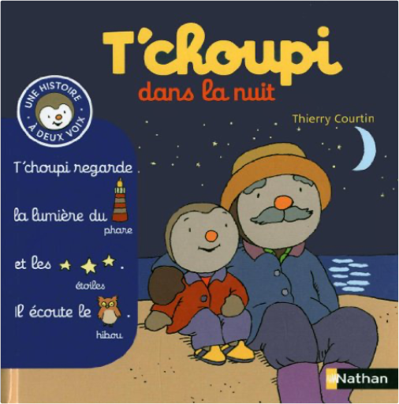

Books
Movies
Albums
Videogames
Games
BD
BD Camille
Blu-ray
Business
Camille
Comics
Cooking
Lego
Manga
Pauline
Photography
Star Wars
T'choupi
Travel
TV Shows
Un livre dont vous êtes le héro
Vinyl
Walt Disney
14
15
16
17
18
t'choupi, à deux voix, tome 2 : dans la forêt
thierry courtin
t'choupi, à deux voix, tome 3 : à la plage
thierry courtin
t'choupi, à deux voix, tome 4 : à la ferme
thierry courtin
t'choupi, à deux voix, tome 5 : au zoo
thierry courtin

t'choupi, à deux voix, tome 6 : dans le nuit
thierry courtin
t'choupi, à deux voix, tome 7 : à la neige
thierry courtin
t'choupi, à deux voix, tome 8 : au marché
thierry courtin
t'choupi, à deux voix, tome 9 : au square
thierry courtin
t'choupi, à deux voix, tome 10 : et les transports
thierry courtin
t'choupi, à deux voix, tome 11 : à l'école
thierry courtin
t'choupi, à deux voix, tome 12 : dans sa maison
thierry courtin
t'choupi, à deux voix, tome 13 : chez le docteur
thierry courtin
14
15
16
17
18


 Made with Delicious Library Made with Delicious Library
Made with Delicious Library Made with Delicious Library